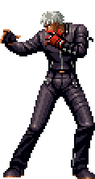
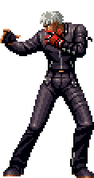

Historia
Golpes
Curiosidades
KOF 99
K' (K-Dash) é introduzido como o protagonista da saga NESTS. Ele é um jovem que teve suas memórias apagadas e foi modificado geneticamente pela organização NESTS, ganhando os poderes flamejantes de Kyo Kusanagi. Junto de Maxima, ele se rebela contra seus criadores e participa do torneio para encontrar respostas sobre seu passado.
KOF 2000
K' continua sua luta contra a NESTS, agora com Whip e Vanessa ao seu lado. Descobre que sua irmã, Whip, também foi uma cobaia da organização. Durante o torneio, enfrenta Zero, um agente da NESTS, e sua clone Kula Diamond, criada para eliminá-lo. Apesar dos desafios, K' segue em frente, determinado a derrubar a organização.
KOF 2001
A batalha final contra a NESTS se intensifica. K' e sua equipe enfrentam os líderes da organização: Krizalid, Original Zero e Igniz. Após uma luta árdua, eles derrotam Igniz, que tenta destruir a Terra em seu último ato de desespero. Com o fim da NESTS, K' se torna um fugitivo, mas agora livre do controle da organização.
KOF 2002
Como um jogo sem história, KOF 2002 UM serve apenas para reunir lutadores de várias edições. K' mantém seu visual clássico e seu estilo de luta baseado em chamas roubadas de Kyo, reforçando sua popularidade entre os fãs da série.
KOF 2003
Agora independente, K' relutantemente entra no torneio junto com Maxima e Whip. Durante o evento, são arrastados para a luta contra Mukai, um misterioso guerreiro que faz parte dos Those from the Past. K' percebe que uma nova ameaça surge, mas se recusa a ser um herói.
KOF XI
K' e sua equipe participam do torneio para investigar os planos de Magaki, outro membro dos Those from the Past. Durante a jornada, enfrentam poderosos oponentes e descobrem que o grupo quer reviver um antigo ser. Após a batalha, K' segue seu caminho, sem se envolver mais do que o necessário.
KOF XIII
Ainda tentando viver sem conflitos, K' é forçado a lutar novamente quando Elisabeth e Ash Crimson iniciam uma nova guerra. Ele descobre que Saiki, um ancestral de Ash, deseja reescrever a história. Junto com Maxima e Kula, K' participa do torneio e ajuda a impedir o colapso do tempo, mesmo sem querer se envolver diretamente.
KOF XIV
K' entra no torneio com Maxima e Kula para impedir que a misteriosa criatura Verse destrua tudo. Durante o evento, descobre que a entidade causa distorções no tempo e espaço, trazendo de volta lutadores que estavam mortos. Após a batalha, K' segue sua vida sem se importar muito com o que aconteceu.
KOF XIV
Mais uma vez, K' luta ao lado de Maxima e Whip. O torneio revela uma nova ameaça cósmica chamada Otoma=Raga. Mesmo sem interesse em salvar o mundo, K' se vê envolvido nos eventos e enfrenta o perigo ao lado de outros lutadores. No fim, continua sua vida como um forasteiro, evitando alianças desnecessárias.